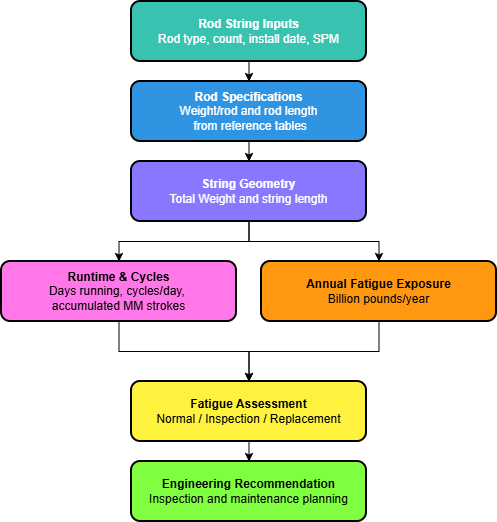
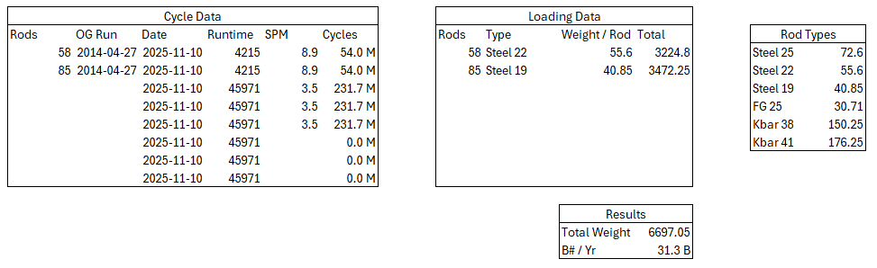
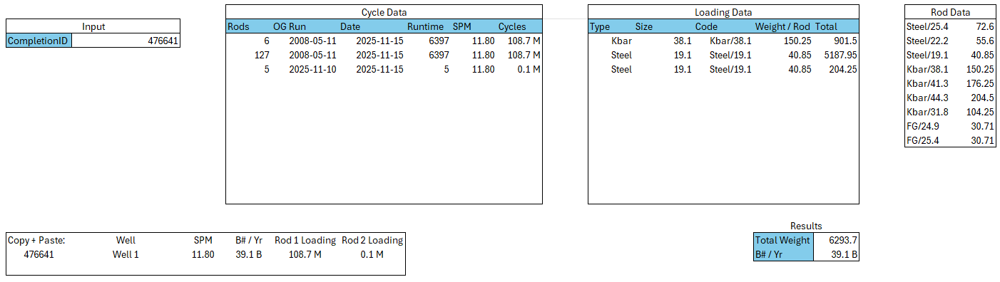
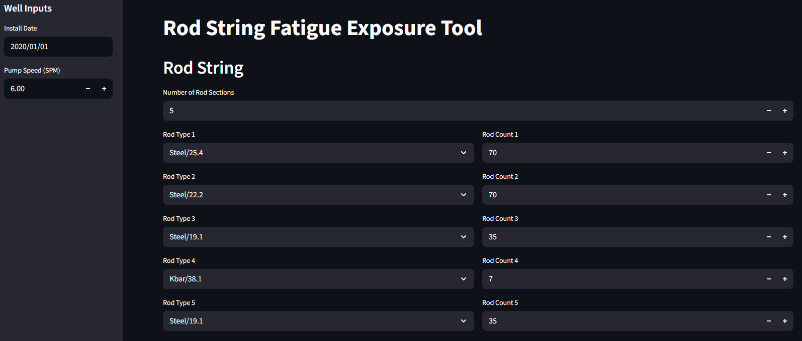
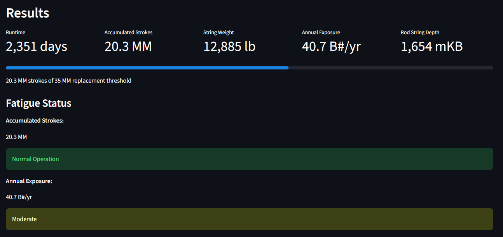
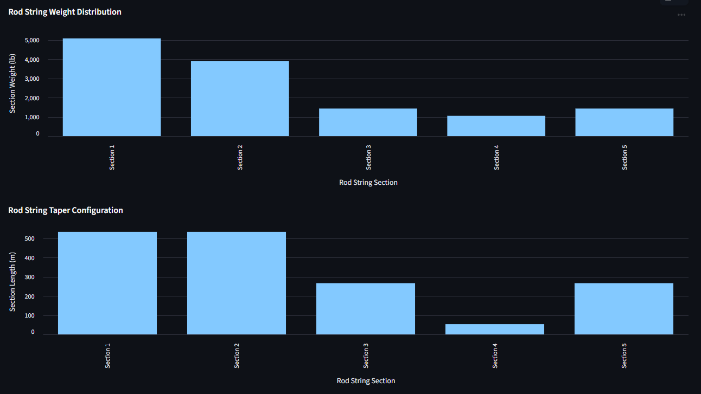

Engineering Calculator Project
Sucker Rod Fatigue Calculator
Developed a rod fatigue calculator to support sucker rod system evaluation by combining manual engineering calculations, automated workflows, and a web-based interface for well-level analysis.
The tool was designed to improve calculation consistency, reduce manual analysis time, and provide clear visual outputs for evaluating fatigue risk and operating conditions.

Problem Statement
Rod fatigue evaluation can require repeated calculations, well-specific inputs, and interpretation of operating conditions. When performed manually, the process can be time-consuming and prone to inconsistent assumptions between users or wells.
A more structured tool was needed to standardize fatigue calculations, simplify well-level analysis, and produce outputs that could be reviewed by engineering and operations teams.
Objective
Develop an engineering calculator capable of evaluating rod fatigue using a repeatable workflow, with options for manual calculation, automated processing, and a web-based interface for easier field or office use.
The goal was to create a practical decision-support tool that translated engineering calculations into clear results and visual diagnostics.
Development Workflow
1. Manual Calculator
Built an initial manual calculator to validate the engineering logic, define required inputs, and establish a transparent calculation process.
2. Automated Calculator
Developed an automated version to reduce repeated manual work, improve consistency, and streamline well-level analysis.
3. Web Interface
Created a web calculator interface to make inputs easier to manage and improve usability for technical review and future deployment.
4. Results & Visualization
Generated well-level results and graphs to communicate fatigue behaviour, operating trends, and calculation outputs more clearly.
Calculator Evolution



Well-Level Results


Key Features
- Manual calculation workflow for transparent engineering validation.
- Automated calculator to reduce repeated analysis time.
- Web-based input form for improved usability and standardization.
- Well-level result summary for quick engineering review.
- Graphical outputs to support interpretation of fatigue behaviour.
Calculation Basis
- Inputs: rod string geometry, material grade, loading assumptions, pump speed, and stroke conditions.
- Outputs: fatigue utilization indicators, operating-condition graphs, and well-level review flags.
- Limitations: screening-level results intended for engineering review, not final design approval.
Engineering Value
The calculator provides a repeatable method for evaluating rod fatigue and communicating well-level results. By moving from manual calculations to automated and web-based tools, the workflow became more consistent, easier to review, and better suited for repeated engineering use.
Future Development
- Additional service-factor modifiers could improve fatigue-life predictions.
- SQL integration could automate well and rod-string data retrieval.
- Automated data pipelines would reduce manual data handling.
- Future enhancements would support scalable fatigue screening across large well inventories.
Technical Stack
| Tool / Area | Purpose |
|---|---|
| Engineering Calculations | Rod fatigue evaluation and calculation logic |
| Excel / Manual Calculator | Initial workflow validation and transparent calculations |
| Automation | Repeatable well-level calculation processing |
| Web Calculator | User input management and calculation interface |
| Data Visualization | Result summaries and engineering interpretation graphs |
Skills Demonstrated
- Engineering calculator development.
- Mechanical system analysis.
- Workflow automation.
- Technical visualization.
- Decision-support tool design.
Data Disclaimer
Operational data shown in this project has been hidden, anonymized, or modified for portfolio presentation purposes. Engineering relationships, implementation approach, and technical methodology were preserved while removing proprietary operational details.